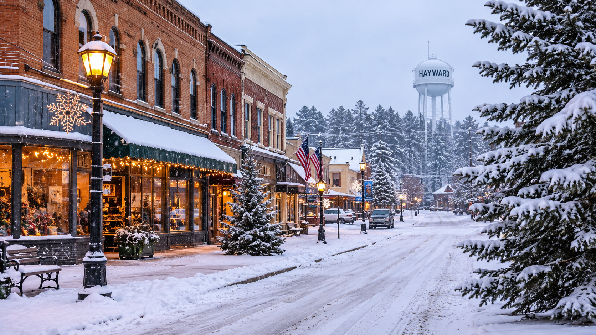

Where should you start your Northwoods trip?
Northern Wisconsin offers forested landscapes, lakes, small communities, and seasonal outdoor recreation. Hayward, Minocqua, and Eagle River each offer opportunities to explore local attractions, enjoy a meal, and experience the Northwoods beyond the trails.
The destinations and businesses featured below are real places. This website itself is a fictional class project and is not affiliated with any of the businesses mentioned.

Hayward: Things to Do in Hayward Wisconsin
Hayward is a popular northwestern Wisconsin destination with outdoor recreation, local restaurants, and Northwoods attractions. When considering things to do in Hayward Wisconsin, visitors can explore the community, spend time outdoors, and enjoy a meal at a local restaurant or supper club.
- Explore the American Birkebeiner Trail System: The Birkie trail system is a well-known outdoor recreation destination in the Hayward area.
- Visit the Fresh Water Fishing Hall of Fame: This museum and attraction celebrates fishing history and the area's outdoor traditions.
- Explore downtown Hayward: Browse local shops and restaurants along Main Street.
- Grab a meal: Backroads Coffee & Tea and The Social Kitchen & Cocktails are real local dining options.
Supper club stop: The Ranch Supper Club, Tally Ho Supper Club, and Trailways on 27 Supper Club are real dining establishments in the Hayward area.
Best for: Riders and visitors who want outdoor recreation, local dining, and a relaxed Northwoods community.
Minocqua: Things to Do in Minocqua
Minocqua combines a lake-country setting with shopping, restaurants, and winter recreation. There are many things to do in Minocqua beyond snowmobiling, making it a useful destination for visitors who want to balance time on the trails with exploring the community.
- Explore Downtown Minocqua: Visit local boutiques, specialty stores, and shops near Lake Minocqua.
- Visit Minocqua Winter Park & Nordic Center: The area offers winter outdoor recreation and another way to enjoy the Northwoods.
- Find a local coffee shop or restaurant: Great Northern Coffee Traders and Cafe Sonder are among the dining options listed in the Minocqua area directory.
- Enjoy a supper club dinner: Norwood Pines Supper Club and Knotty Barrel Supper Club are real Minocqua-area dining options.
Best for: Couples, friends, and families who want outdoor recreation alongside shopping, dining, and other winter activities.
Explore the Downtown Minocqua shopping and dining directory to find more local businesses.
Eagle River: Eagle River Wisconsin Restaurants and Local Stops
Eagle River is known for its Northwoods setting and winter recreation. Visitors looking for Eagle River Wisconsin restaurants can find everything from casual cafés to family restaurants and traditional supper clubs.
- Leif's Cafe: A local restaurant serving breakfast, lunch, and dinner.
- Friendship House Family Restaurant: A family-style restaurant offering home-cooked meals and breakfast throughout the day.
- Eagle River Roasters Coffee House: A local coffee shop and a convenient stop for a warm drink.
- Explore downtown: Visit local shops and businesses along Railroad Street and Wall Street.
Supper club stop: Eagle River-area supper clubs include Chanticleer Inn, Eagle Waters Resort, Pitlik's Sand Beach Resort, and Chef Rene's at the Inn.
Best for: Groups who want a traditional Northwoods atmosphere, local restaurants, and a mix of outdoor activity and small-town amenities.
Find more options in the Eagle River Area Chamber of Commerce dining directory.
Best Supper Clubs in Wisconsin's Northwoods
A supper club is a classic Wisconsin dining experience. Many Northwoods supper clubs are known for traditional dinners, welcoming atmospheres, and regional favorites. If you are searching for the best supper clubs in Wisconsin, these real establishments are options to explore in the Hayward, Minocqua, and Eagle River areas.
Hayward Area Supper Clubs
- The Ranch Supper Club: A supper club located in Hayward.
- Tally Ho Supper Club: A traditional Northwoods supper club on State Highway 77.
- Trailways on 27 Supper Club: A supper club located on West County Road K.
Minocqua Area Supper Clubs
- Norwood Pines Supper Club: A traditional supper club located on Highway 70 near Minocqua.
- Knotty Barrel Supper Club: A Minocqua dining option listed in the local downtown directory.
Eagle River Area Supper Clubs
- Chanticleer Inn: A dining destination on East Dollar Lake Road.
- Eagle Waters Resort: A resort and supper-club destination on Eagle Waters Road.
- Pitlik's Sand Beach Resort: A resort and dining destination on Sand Beach Drive.
- Chef Rene's at the Inn: A dining establishment on Highway 70.
Explore the Eagle River Area Chamber of Commerce supper-club directory.
Important: Confirm Details Before Your Visit
The businesses and destinations listed on this page are real, but operating hours, seasonal schedules, menus, and availability can change. Contact each business or check its official website before visiting. Never assume a restaurant or attraction has direct snowmobile trail access. Confirm current county trail reports, official maps, road crossings, and local regulations before planning your route.
How to Plan a Snowmobile-Friendly Day
Make Your Stops Part of the Plan
- Start with breakfast. Choose a convenient meeting place where everyone can review the route, forecast, and trail status.
- Ride during the best available conditions. Set a realistic distance and allow extra time for slower sections, breaks, and changing weather.
- Plan a lunch stop. Confirm that the location is open, that you can reach it legally, and that your group has enough fuel for the full journey.
- Leave room for exploring. Walk through town, visit local shops, or find a scenic place that is accessible without entering closed or restricted areas.
- End the day safely. Set a turnaround time that accounts for daylight, fuel, fatigue, and the weather forecast.
What to Look for in a Good Stop
- Convenient location: Check whether the stop is accessible by a currently open, legal route. Never assume a business has direct trail access.
- Warm indoor space: A comfortable place to rest helps everyone recover from the cold.
- Food and drinks: Plan for meals and water rather than relying on finding an open business along the way.
- Fuel and parking: Verify operating hours, parking arrangements, and any local restrictions in advance.
- Options for the whole group: Consider non-riders, younger family members, and anyone who wants a break from outdoor activities.
Plan Around Weather and Safety
Weather and trail conditions can affect which destinations and stops are practical. Before leaving, review current trail updates and make sure your planned route accounts for changing conditions.
Plan Your Stops into Town Around Important Weather Updates and review Important Safety Guidelines to Keep in Mind before heading out.
First Trip or Annual Tradition?
First-time visitors can focus on one community, a short route, and a small number of planned stops. That leaves time to learn the area without rushing.
Returning riders can use a familiar destination as a base while exploring a different open route or visiting another nearby community, provided current trail conditions and travel distances make it practical.
For real trip planning, start with the Wisconsin Department of Natural Resources and the National Weather Service. Verify all business details and local trail information independently.